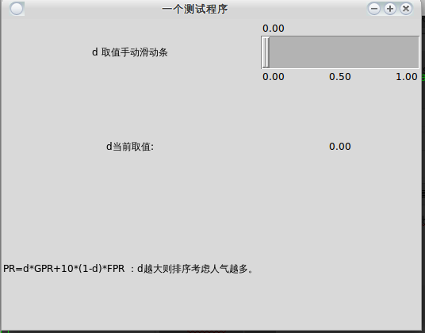

CSDN老博文迁移-用python做一个简易的图形界面
原文链接见：http://blog.csdn.net/zazzle/article/details/8998612
这里使用Tkinter库，还有很多别的图形库，但是我觉得Tkinter比较简单，我才学几天，但是就有点入门了，一些基本的思想，基本函数的意思也大致弄清了，所以Tkinter还是比较简单易用的。
别的不多说，先上代码：
#!/usr/bin/python
#-*- coding:utf-8 –*-
from Tkinter import *
win = Tk()
#win.title('google search engine optimal')
win.title('一个测试程序')
# the top level of the window
def report(text):
#print(v.get())
entry2 = Label(root, text = v.get())
entry2.grid(row = 1, column = 1)
root = Frame(win)
root.pack()
label1 = Label(root, text = 'd 取值手动滑动条', width = 25)
label1.pack(side = LEFT)
label1.grid(row = 0, column = 0)
v = StringVar()
scl = Scale(root, from_ = 0, to = 1, tickinterval = 0.5, resolution = 0.01, orient = 'horizontal', variable=v, sliderlength = 10, width = 40, length = 200, command=report)
scl.grid(row = 0, column = 1)
print (scl.get())
label2 = Label(root, text = 'd当前取值:', height = 10)
label2.grid(row = 1, column = 0)
label3 = Label(root, text = 'PR=d*GPR+10*(1-d)*FPR ：d越大则排序考虑人气越多。', height = 10)
label3.grid(row = 2)
root.mainloop()效果如下：

说说我的看法吧， 用Tkinter画图首先要创建一个根挂件，可以用Tk()产生 然后要产生不同类型的小挂件，有标签Label，按钮Button，接口Entry 之类的，具体的查看网上的详细文档。 比如说用widget = Label(None, text = ‘hello’)产生了一个内容为hello的标签之后还要确定把这个标签放在哪个位置，所以就要用到pack() pack有很多选项，比如说要不要随着屏幕缩放expand，要不要填充fill，还可以设置位置anchor。 pack完了之后要维持这个窗口的运行，root.mainloop()或者是widget.mainloop()都行。
这样产生的窗口只能有一个挂件，如果要把多个挂件放在一个窗口就要用到容器Frame() win = Frame(root) 产生一个叫作win的容器，下面要产生的挂件都是放在这个容器里面的。
widget1 = Label(win, text = 'widget1')
widget1.pack(side = TOP)
widget2 = Button(win, text = 'button')
widget2.pack(side = TOP)就能产生类似下图的效果：